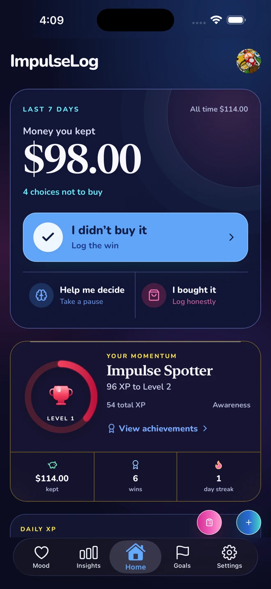
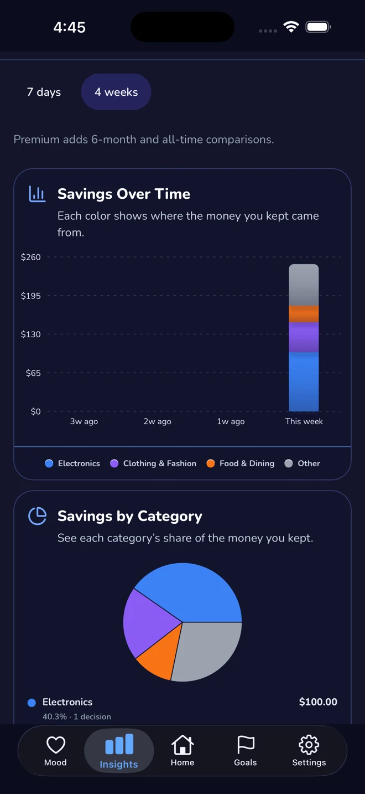

1. Catch the impulse
Instead of switching between shopping tabs and mental math, you log the item, amount, notes, mood, and optional place in one place.
ImpulseLog is not a full budgeting suite. It is a focused iPhone app for logging resisted purchases, slowing down with a wait timer, planning shopping lists, tracking mood and place context, and turning “I almost bought that” into visible savings momentum.

Articles can explain emotional spending, ADHD patterns, or strategies that help. That is useful, but the next step still has to happen during a real urge.
ImpulseLog ties the moment to a clear action: open the app, log the urge, pause the purchase, plan the trip, and build momentum toward a savings goal.
Instead of switching between shopping tabs and mental math, you log the item, amount, notes, mood, and optional place in one place.
Use the wait timer when you want friction before buying, especially for items that feel urgent in the moment.
Resisted purchases feed your Impulse Ledger, savings goals, streaks, and challenges so self-control feels visible.
The dashboard keeps your recent wins, goals, and daily challenges visible so impulse control feels like progress, not deprivation.

Review what you resisted, where the money would have gone, and which categories, moods, or places create the most friction.
ImpulseLog gives you a clear answer to “what should I do instead of buying this right now?” without turning the moment into a complicated budgeting session.